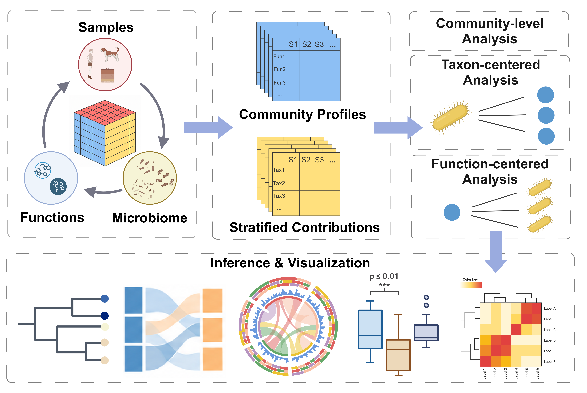
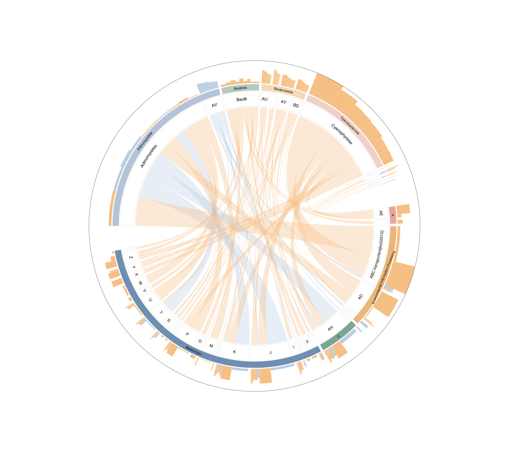
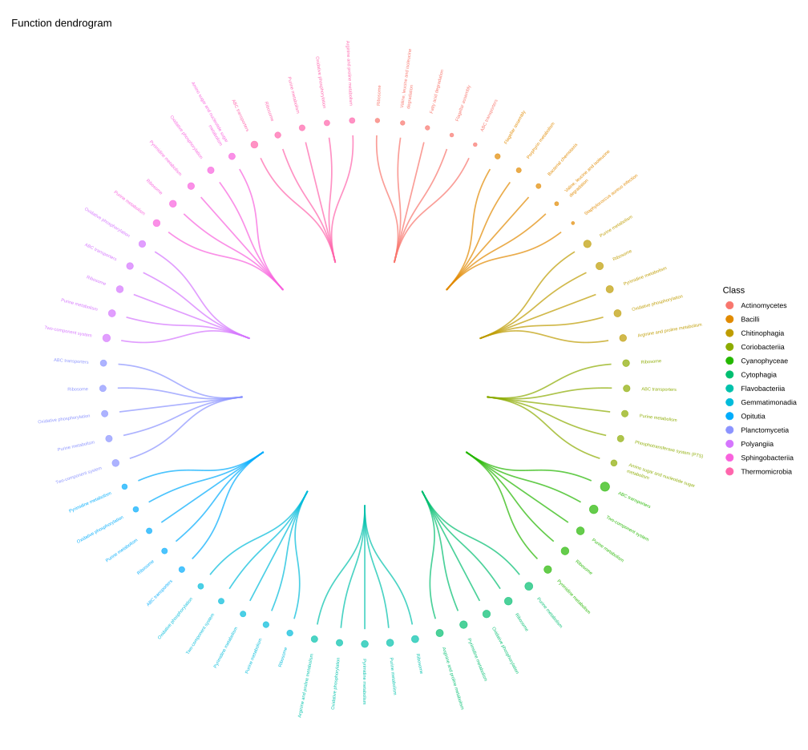
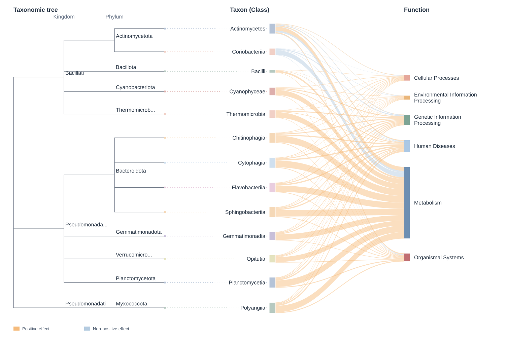

Connect microbial taxa to predicted functions.
Analyze and visualize PICRUSt2 predictions, linking community-level functional patterns to taxon-specific contributions.
From community profiles to individual contributors
Understanding microbial communities requires knowing both which microbes are present and what they can do. Functional profiling helps characterize their roles in ecosystems, host physiology and disease. For 16S rRNA studies, PICRUSt2 predicts functional potential from reference genomes and sequence abundances, making downstream analysis accessible when shotgun metagenomic data are unavailable.
Community-level functional profiles summarize predictions across contributors, but can obscure the taxa behind a functional difference. An increase in a function may be driven by only a few taxa, while a stable total may conceal shifts in its contributors. Analyzing taxonomic abundance and pooled functional profiles separately cannot recover these links.
MicroFun is an R package for downstream analysis and visualization of standard and stratified PICRUSt2 output. Building on ggpicrust2, it integrates data preparation, statistical analysis, functional annotation and visualization, and extends the workflow with two complementary analyses of stratified contributions:
- Taxon-centered analysis tests for group-associated differences in predicted functional contributions within each taxon.
- Function-centered analysis tests for group-associated differences in taxon contributions to each function.
Together, these analyses help identify which taxa contribute to functional differences and how predicted contributions vary across groups, while retaining the links between taxa and functions.
Connect statistical results to visual interpretation
MicroFun combines these analyses with complementary visualizations that keep taxa and functions connected. Users can explore the functions associated with a taxon or examine the taxa contributing to a function, moving between an overview of significant relationships and detailed group comparisons.
- Bidirectional Sankey diagrams summarize selected taxa–function associations, with optional taxonomy or ASV phylogeny on the taxon side. Ribbon width counts the displayed associations. Explore taxon-to-function and function-to-taxon views.
- Chord diagrams show mean predicted contributions as ribbon width and absolute model effects as outer bars, connecting taxa to functions or functions to taxa.
- Contribution box plots compare predicted contributions across groups, organized by taxon or function.
- Signed-effect plots and association dendrograms show model effects and organize selected relationships in both analysis directions. For MaAsLin2, signed effects are AST coefficients. For evolutionary relationships, use the phylogeny mode of Sankey.
By bringing data preparation, statistical testing, annotation and plotting into one workflow, MicroFun helps users explore functional differences together with their microbial contributors.


Installation
Install MicroFun from the source package. See installation and dependencies for the setup instructions.
Tutorials
- Demonstration Study: Study data and downloads → Standard → Stratified.
- Prepare your own data for PICRUSt2 outputs and input checks.
- Visualization guides for plot controls, selections, export and troubleshooting.
Explore MicroFun visualizations
Three representative views of predicted functional contributions. Select a figure to explore the corresponding result; see the stratified demonstration for boxplots, signed effects and additional views.


Chord diagram
Compare predicted contributions and model-effect direction.
Explore the example →
Association dendrogram
Explore the association overview across retained classes.
Explore the example →

Sankey diagram
Trace selected taxa–function associations with taxonomy context.
Explore the example →Documentation
- Getting started: installation and a guide to the documentation.
- Function reference: arguments, usage and examples from the package source.
- Changelog: package updates.
Support
Ask questions or report issues on GitHub.